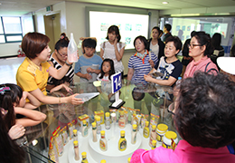

고객 서비스
- 공장 견학
- 오뚜기 대풍공장은 새로운 시대에 걸맞는 21세기형 공장으로 HACCP에 적합한 공정,
물류 동선이 효율적으로 설계된 공장으로 완벽한 전산화를 통한 첨단 시스템을 갖춘 공장입니다.
공장 견학
보다 좋은 품질, 보다 높은 영양, 보다 앞선 식품으로 인류 식생활 향상을 위해 노력해 온 오뚜기는
맛있고 풍요로운 식탁이 화목하고 건강한 생활의 출발이라는 스위트홈 구현에 앞장서고 있습니다.
최첨단 설비와 위생적인 공정으로 최고 품질의 제품을 생산하고 있는 그 현장을 여러분의 두 눈으로 직접 확인해 보시기 바랍니다.
견학을 원하시는 분들은 아래 사항을 참고하시어, 견학신청하기 버튼을 클릭해 주세요!

| 견학 공장 | (주) 오뚜기 대풍공장 (충북 음성 소재) |
|---|---|
| 견학 기간 | 3월 ~ 11월 (혹서기인 7~8월은 견학을 실시하지 않음) |
| 견학 횟수 | 주 2회 운영 (화, 목) |
| 견학 대상 | 40~45명으로 구성된 단체를 우선으로 함. (단, 유치원생은 부모 동반시 가능)
※ 고객님의 안전을 위하여 제한함을 양해해 주시기 바랍니다. |
| 견학 인원 | 1회당 45명 (차량 1대) |
| 견학 문의 | 오뚜기 홍보실 (02-2010-0716) |
한눈에 보는 공장견학
- 1. 회사 및 공장소개
- 2. 점심식사
- 3. 공장견학
- 4. 신제품 시식 및 요리교실
- 5. 질의응답 및 설문지 작성
- 6. 견학기념 선물세트 증정
- 7. 단체기념촬영
 8. 견학종료
8. 견학종료
견학 신청하기
최첨단 설비와 위생적인 공정으로 최고 품질의 제품을 생산하고 있는 그 현장을 여러분의 두 눈으로 직접 확인해 보시기 바랍니다.
견학을 원하시는 분들은 아래 사항을 참고하시어, 견학신청하기 버튼을 클릭해 주세요!